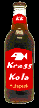
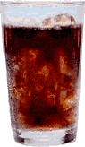
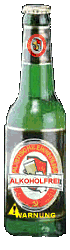

|
|
|
|
Carte des sodas
|
|
|
|
| Krass Kola Origine : Krassland Commentaire : La première boisson à base de farine de poisson mazouté. |

|
| Kolchosa
Cola Origine : Kaputistan Commentaire : Boisson rafraichissante dont vous pouvez choisir les ingrédients (sucre, caféine, gaz carbonique) |
 |
Blubber Koli
Origine : Ratelon
Commentaire : Le cola de la marque Blubber-Glucksi
Fresh Glucksi
Origine : Ratelon
Commentaire : Une limonade au citron vert
Blubber Orange
Origine : Ratelon
Commentaire : Soda pétillant au goût
d'orange
| Bière
sans alcool Revolutionsbier Origine : Kaputistan Commentaire : Cette bière sans alcool (4%) est disponible en canettes de 33cl et 50cl |
 |
Blubber Saft
Origine : Ratelon
Commentaire : Jus de fruits (divers parfums)